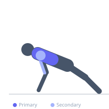

Exercise guide / Incline Push-Up
Incline Push-Up
The incline push-up is a modified push-up performed with the hands on an elevated surface such as a bench, box, or step. Elevating the hands shifts the loading emphasis toward the lower (sternal) portion of the pectoralis major and reduces the total bodyweight lifted, making this an accessible entry point for beginners building pressing strength.
Primary muscles
pectoralis major sternal
Secondary muscles
pectoralis major clavicular
deltoid anterior
triceps lateral head
triceps medial head
Stabilizers
transverse abdominis
pectoralis minor
Equipment
No Equipment (Bodyweight)
Optional
Flat Bench


Starting position
- Place both hands on a bench or elevated surface slightly wider than shoulder-width apart. Walk your feet back until your body forms a straight diagonal line from head to heels, with arms fully extended.
Setup
- Choose a surface height that matches your current strength level — higher elevation means easier. Ensure the surface is stable and will not slide.
Steps
- Step 1: Position hands on the elevated surface slightly wider than shoulder-width, fingers pointing forward.
- Step 2: Walk feet back to form a straight plank line from head to heels. Brace the core.
- Step 3: Inhale and lower the chest toward the surface by bending the elbows, keeping them at roughly 45 degrees from the torso.
- Step 4: Pause when the chest is an inch from the surface, then exhale and press back to the starting position.
Coaching cues
- Keep your body as stiff as a board from head to heels
- Think about spreading the floor apart with your hands as you press up
Breathing
- Inhale as you lower toward the surface; exhale as you push back up.
Range of motion
- Lower until the chest nearly touches the surface, then press fully back to arm extension without locking the elbows aggressively.
Tempo
- 3-0-1-0 (3 seconds down, 1 second up)
Common mistakes
- Allowing the hips to sag or pike — maintain a rigid plank throughout
- Flaring the elbows out to 90 degrees, which stresses the shoulder joint
Safety
- Keep wrists stacked directly under the shoulders to minimize wrist stress
Training
- strength: 5–10 reps
- hypertrophy: 10–20 reps
- endurance: 20–40 reps
- strength: 3–4 sets
- hypertrophy: 2–4 sets
- endurance: 2–3 sets
- Rest: {'strength': 90, 'hypertrophy': 60, 'endurance': 30}